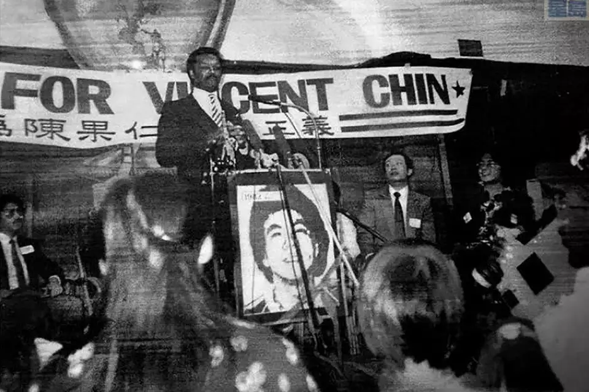

Solidarity
To have the strength in numbers that is critical for movements, the ACJ built solidarity among many different groups. This allowed for a broader public sympathy towards Vincent Chin and more pressure on the justice system to help Chin.
-
Pan-Asian Solidarity
The ACJ was the first national pan-Asian group advocating for Asian American rights. The ACJ was able to grow and expand among all Asian ethnicities though they started out mainly Chinese. Pre-existing national groups like the Japanese American Citizens League, Organization of Chinese Americans, and more supported the ACJ as well. The Japanese American community was critical in helping the ACJ due to their ongoing redress campaign for incarceration, and their relationship with current Congresspeople, like Congressperson Norman Mineta, helped the ACJ get federal attention in their cause, which has proven to be extremely effective throughout history. Additionally, the larger South Asian and Filipino population in Michigan was helpful for their connections with politics and helped highlight Asian Americans in the politics. This large outpouring of support from the whole Asian community, not just separated by nationality, was helpful in the fight for Asian American rights with the strength in larger numbers and similar experiences.

Protestors of many different races, ethnicities, ages, and gender hold a picket line for justice for Vincent Chin.
Additionally, the ACJ had many immigrants, middle-aged and elderly people involved. This was different from previous Asian American movements, like the Yellow Power and Ethnic Studies movements that mainly consisted of young students. Women also played a central role in the movement, with leaders like Lily Chin, Helen Zia, and Liza Chan. The ACJ was able to really connect people with Vincent’s story as a brother,son, or relative, and something that could happen to any Asian American, allowing an outpouring of support from all different cultural, class, and age backgrounds within the Asian American community.
-
Cross-Racial Support
Rev. Jesse Jackson traveled to San Francisco Chinatown to speak out against racial violence towards Asians and call for Asian and Black solidarity.
The ACJ was able to build cross-racial solidarity in their cause for justice for Vincent Chin as well. The Detroit Area Black Organization (DABO) was extremely critical in helping the ACJ get meetings with the judge and prosecutor of the case. Horace Sheffield, the leader of DABO at the time, became a very strong advocate for Vincent Chin and the ACJ, and he helped the ACJ meet with Judge Kaufman. Before Sheffield’s help, Judge Kaufman kept on delaying the meeting with Lily Chin and Liza Chan, writing that he was on vacation. Similarly, the Detroit NAACP branch spoke out in solidarity, protesting and speaking at the demonstration at Kennedy Square. Reverend Jesse Jackson also publicly supported the ACJ during his presidential campaign, further bringing national attention to the cause. Detroit-area Latinx, Arab, Indigenous, and women’s organizations, as well as religious communities, showed up in solidarity with the ACJ as well, further increasing numbers and pressure on the government for their legal action. This stronger and broader support for the ACJ was very beneficial to get national and federal attention and to increase their power in numbers.
-
Government Support
Members of the Detroit City Council, including the president at the time, Congressperson Norman Mineta, and U.S. representative John Coyners all issued statements of support for the ACJ and the cause for justice for Vincent Chin. The ACJ was also able to meet with federal officials to start the federal investigation into Ebens and Nitz, which proved to be extremely important in United States v Ebens to get justice. The government’s actions were really important in turning the tide for this case, for better or worse, which has been shown throughout history.